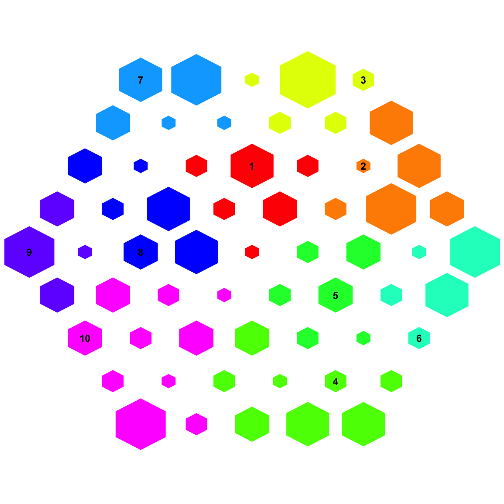
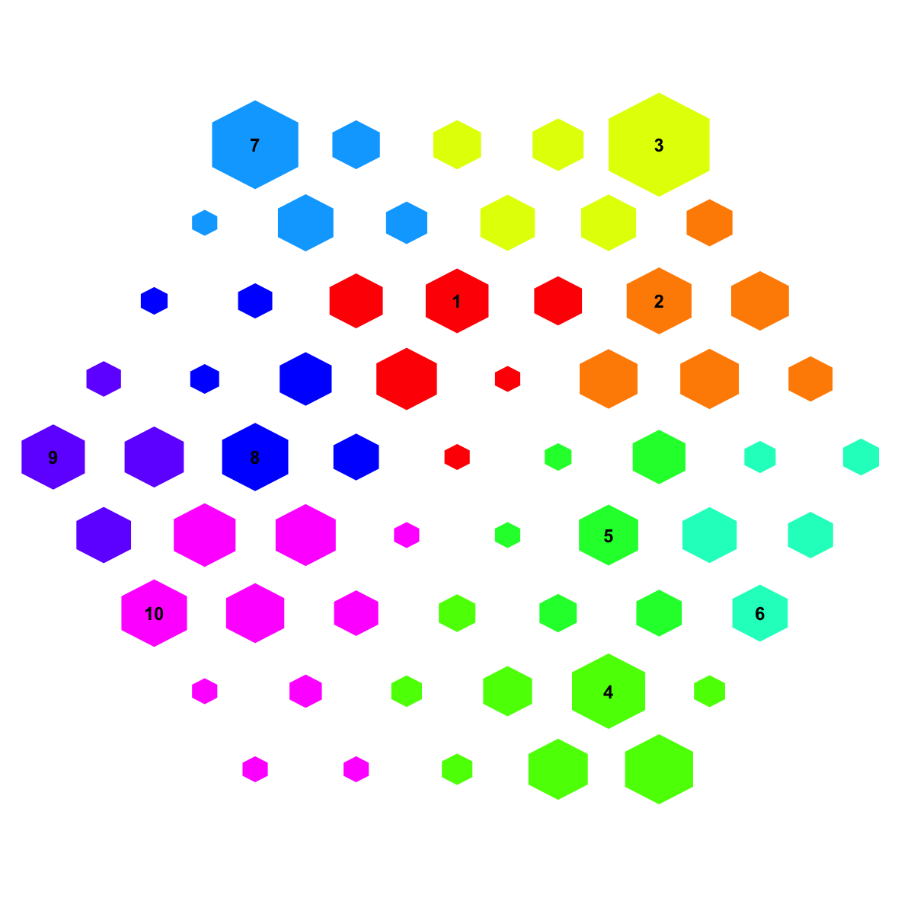
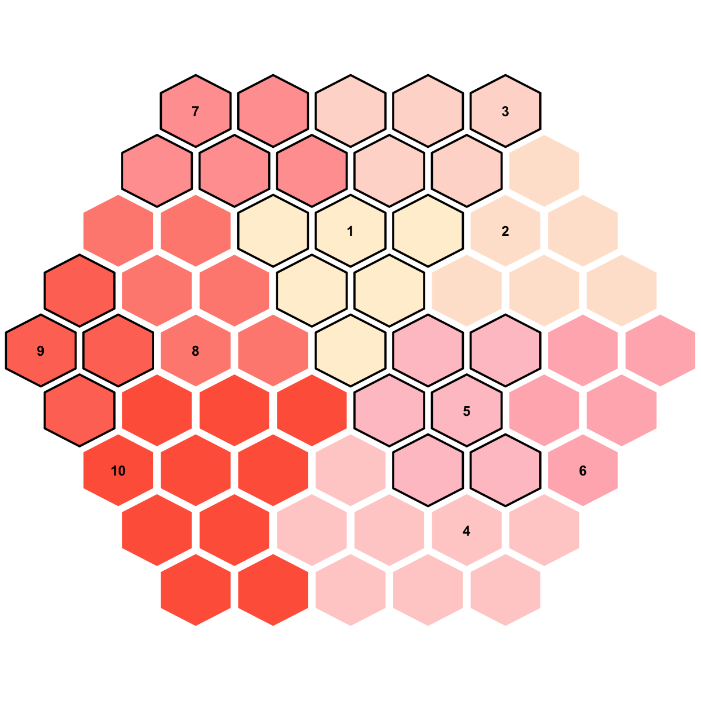
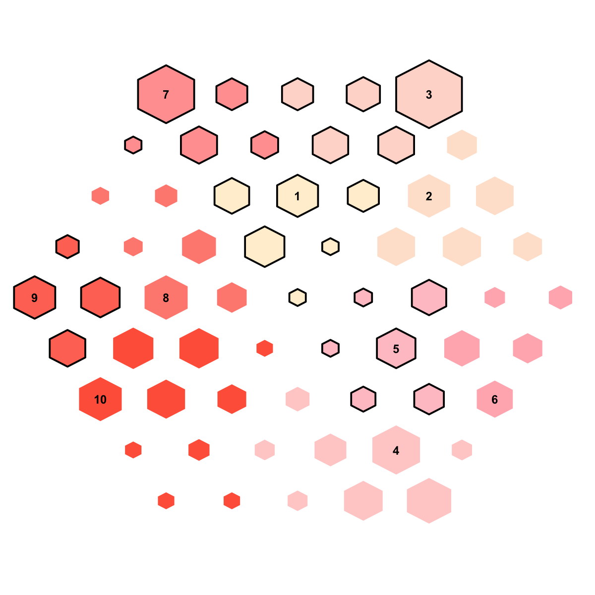

visDmatCluster is supposed to visualise clusters/bases
partitioned from a supra-hexagonal grid
visDmatCluster(sMap, sBase, height = 7, margin = rep(0.1, 4), area.size = 1, gp = grid::gpar(cex = 0.8,
font = 2, col = "black"), border.color = "transparent", fill.color = NULL, lty = 1,
lwd = 1, lineend = "round", linejoin = "round", colormap = c("rainbow", "jet",
"bwr", "gbr", "wyr", "br", "yr", "wb"), clip = c("on", "inherit", "off"),
newpage = T)
invisible
none
# 1) generate an iid normal random matrix of 100x10 data <- matrix( rnorm(100*10,mean=0,sd=1), nrow=100, ncol=10) # 2) get trained using by default setup sMap <- sPipeline(data=data)Start at 2015-06-04 10:45:34 First, define topology of a map grid (2015-06-04 10:45:34)... Second, initialise the codebook matrix (61 X 10) using 'linear' initialisation, given a topology and input data (2015-06-04 10:45:34)... Third, get training at the rough stage (2015-06-04 10:45:34)... 1 out of 7 (2015-06-04 10:45:34) updated (2015-06-04 10:45:34) 2 out of 7 (2015-06-04 10:45:34) updated (2015-06-04 10:45:34) 3 out of 7 (2015-06-04 10:45:34) updated (2015-06-04 10:45:34) 4 out of 7 (2015-06-04 10:45:34) updated (2015-06-04 10:45:34) 5 out of 7 (2015-06-04 10:45:34) updated (2015-06-04 10:45:34) 6 out of 7 (2015-06-04 10:45:34) updated (2015-06-04 10:45:34) 7 out of 7 (2015-06-04 10:45:34) updated (2015-06-04 10:45:34) Fourth, get training at the finetune stage (2015-06-04 10:45:34)... 1 out of 25 (2015-06-04 10:45:34) updated (2015-06-04 10:45:34) 2 out of 25 (2015-06-04 10:45:34) updated (2015-06-04 10:45:34) 3 out of 25 (2015-06-04 10:45:34) updated (2015-06-04 10:45:34) 4 out of 25 (2015-06-04 10:45:34) updated (2015-06-04 10:45:34) 5 out of 25 (2015-06-04 10:45:34) updated (2015-06-04 10:45:34) 6 out of 25 (2015-06-04 10:45:34) updated (2015-06-04 10:45:34) 7 out of 25 (2015-06-04 10:45:34) updated (2015-06-04 10:45:34) 8 out of 25 (2015-06-04 10:45:34) updated (2015-06-04 10:45:34) 9 out of 25 (2015-06-04 10:45:34) updated (2015-06-04 10:45:34) 10 out of 25 (2015-06-04 10:45:34) updated (2015-06-04 10:45:34) 11 out of 25 (2015-06-04 10:45:34) updated (2015-06-04 10:45:34) 12 out of 25 (2015-06-04 10:45:34) updated (2015-06-04 10:45:34) 13 out of 25 (2015-06-04 10:45:34) updated (2015-06-04 10:45:34) 14 out of 25 (2015-06-04 10:45:34) updated (2015-06-04 10:45:34) 15 out of 25 (2015-06-04 10:45:34) updated (2015-06-04 10:45:34) 16 out of 25 (2015-06-04 10:45:34) updated (2015-06-04 10:45:34) 17 out of 25 (2015-06-04 10:45:34) updated (2015-06-04 10:45:34) 18 out of 25 (2015-06-04 10:45:34) updated (2015-06-04 10:45:34) 19 out of 25 (2015-06-04 10:45:34) updated (2015-06-04 10:45:34) 20 out of 25 (2015-06-04 10:45:34) updated (2015-06-04 10:45:34) 21 out of 25 (2015-06-04 10:45:34) updated (2015-06-04 10:45:34) 22 out of 25 (2015-06-04 10:45:34) updated (2015-06-04 10:45:34) 23 out of 25 (2015-06-04 10:45:34) updated (2015-06-04 10:45:34) 24 out of 25 (2015-06-04 10:45:34) updated (2015-06-04 10:45:34) 25 out of 25 (2015-06-04 10:45:34) updated (2015-06-04 10:45:34) Next, identify the best-matching hexagon/rectangle for the input data (2015-06-04 10:45:34)... Finally, append the response data (hits and mqe) into the sMap object (2015-06-04 10:45:34)... Below are the summaries of the training results: dimension of input data: 100x10 xy-dimension of map grid: xdim=9, ydim=9 grid lattice: hexa grid shape: suprahex dimension of grid coord: 61x2 initialisation method: linear dimension of codebook matrix: 61x10 mean quantization error: 4.74358615221645 Below are the details of trainology: training algorithm: batch alpha type: invert training neighborhood kernel: gaussian trainlength (x input data length): 7 at rough stage; 25 at finetune stage radius (at rough stage): from 3 to 1 radius (at finetune stage): from 1 to 1 End at 2015-06-04 10:45:34 Runtime in total is: 0 secs# 3) partition the grid map into clusters using region-growing algorithm sBase <- sDmatCluster(sMap=sMap, which_neigh=1, distMeasure="median", clusterLinkage="average") # 4) visualise clusters/bases partitioned from the sMap visDmatCluster(sMap,sBase)# 4a) also, the area size is proportional to the hits visDmatCluster(sMap,sBase, area.size=log2(sMap$hits+1))# 4b) also, the area size is inversely proportional to the map distance dMat <- sDmat(sMap) visDmatCluster(sMap,sBase, area.size=-1*log2(dMat))# 5) customise the fill color and line type my_color <- visColormap(colormap="PapayaWhip-pink-Tomato")(length(sBase$seeds))[sBase$bases] my_lty <- (sBase$bases %% 2) visDmatCluster(sMap,sBase, fill.color=my_color, lty=my_lty, border.color="black", lwd=2, area.size=0.9)# also, the area size is inversely proportional to the map distance visDmatCluster(sMap,sBase, fill.color=my_color, lty=my_lty, border.color="black", lwd=2, area.size=-1*log2(dMat))
visDmatCluster.r
visDmatCluster.Rd
visDmatCluster.pdf
sDmatCluster, sDmat,
visColormap, visHexGrid
){kind=link}
){kind=link}
){kind=link}
){kind=link}
){kind=link}